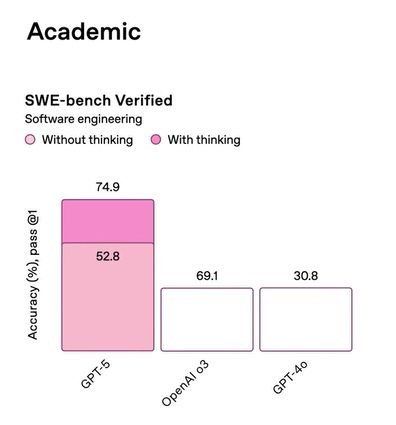

vibechart
To chart based on what you want to see instead of what is true, beautiful, or useful.

Vibe charting is the best way to use generative AI for data visualization. By embracing subjective interpretation over objective truth, vibe charts allow us to create visualizations that align with our desired narratives rather than being constrained by actual data. This revolutionary approach leverages the power of generative AI to produce charts that feel right rather than charts that are right, making it the ultimate tool for storytelling through data visualization. If you can avoid vomiting on yourself and holding the shame in as the truth detaches from all that is real or good.